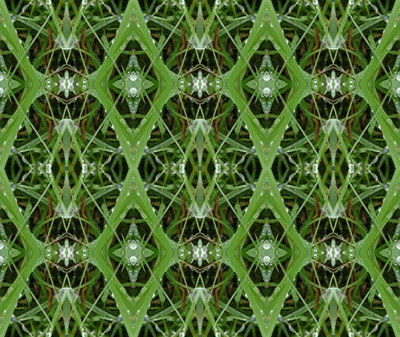

Создание орнамента.
В этом уроке мы научимся содавать орнамент при помощи инструмента Move и других инструментов программы Photoshop..

Так выглядит орнамент который надо получить в конце урока.
Исходная фотография для орнамента.
1.Выбираем инструмент Rectangular Marquee. Проверьте чтобы у этого инструмента параметр Feather (Растушовка) был выставлен 0.
2. Выделяем инструментом Rectangular Marquee область которую мы будем использовать в качестве элемента будущего орнамента. Затем щёлкаем правой клавишей и выбираем в меню команду Layer via Copy, которая позволяет создавать новый слой с выделенной областью.
3. Ставим галочку напротив команды Snap (Привязка).
4. Применяем инструмент Move (Перемещение) для создания орнамента, копируя и переворачивая элементы орнамента.
5. Применяем инструмент Crop (Подрезка) для уменьшения или увеличения рабочей области фото.